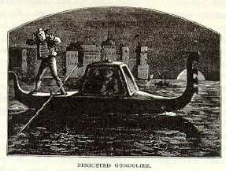

Venice By DayWe reached Venice at eight in the evening, and entered a hearse belonging to the Grand Hotel d'Europe. At any rate, it was more like a hearse than any thing else, though to speak by the card, it was a gondola. And this was the storied gondola of Venice!--the fairy boat in which the princely cavaliers of the olden time were wont to cleave the waters of the moonlit canals and look the eloquence of love into the soft eyes of patrician beauties, while the gay gondolier in silken doublet touched his guitar and sang as only gondoliers can sing! This the famed gondola and this the gorgeous gondolier!--the one an inky, rusty old canoe with a sable hearse-body clapped on to the middle of it, and the other a mangy, barefooted guttersnipe with a portion of his raiment on exhibition which should have been sacred from public scrutiny. Presently, as he turned a corner and shot his hearse into a dismal ditch between two long rows of towering, untenanted buildings, the gay gondolier began to sing, true to the traditions of his race. I stood it a little while. Then I said: "Now, here, Roderigo Gonzales Michael Angelo, I'm a pilgrim, and I'm a stranger, but I am not going to have my feelings lacerated by any such caterwauling as that. If that goes on, one of us has got to take water. It is enough that my cherished dreams of Venice have been blighted forever as to the romantic gondola and the gorgeous gondolier; this system of destruction shall go no farther; I will accept the hearse, under protest, and you may fly your flag of truce in peace, but here I register a dark and bloody oath that you shan't sing. Another yelp, and overboard you go." |